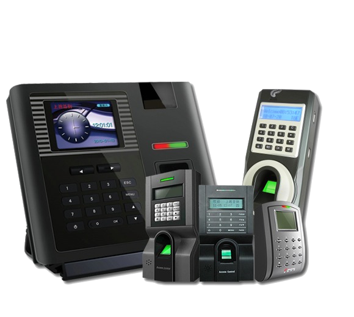
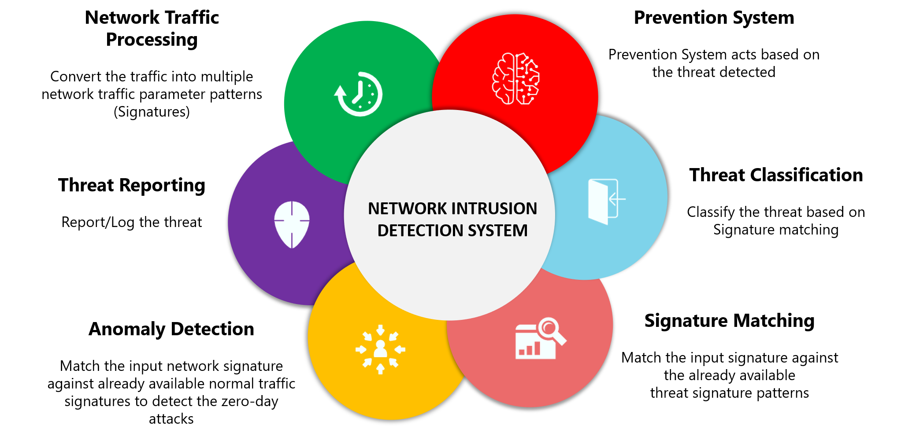
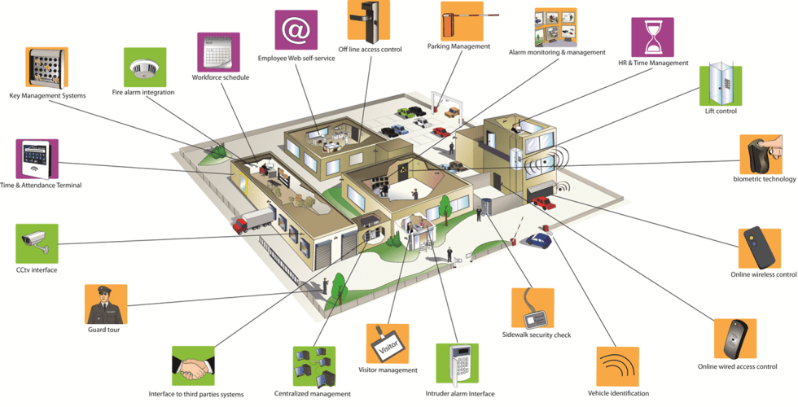
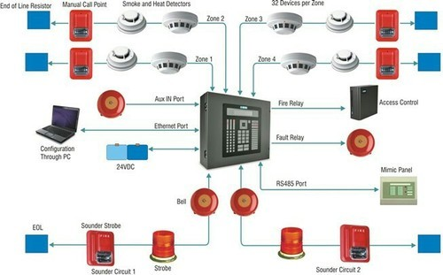

<div class="bgcheck">
    <div class="container">
        <div class="bodyAlign" data-aos="zoom-in">
            <div class="card headerTag my-4">
                <span class="m-2">SURVEILLANCE SYSTEM</span>
            </div>
        </div>
        <div class="row contentText">
            <div class="col-sm-12 col-md-6 mb-4" data-aos="fade-right">
                <h5 class="fw-bold text-center">Bio Metric(eSSL)</h5>
                <p>eSSL has always been emphasizing on the technology when it comes to end customer satisfaction. Blend of unique technologies and products, eSSL’s solutions takes a name as synonymous in the security industry.  Constant internal changes and revamping of technological models, eSSL stands as an unbeaten name in the security industry. </p>
                <p>MT 100 is a fingerprint and RFID card Device, specialized for standalone time and attendance. The portable feature and long battery life makes it perfect for off-site time management. While tracking time and attendance (labour costs accurately, it helps increase in managing a mobile workforce on remote sites</p>
            </div>
            <div class="col-sm-12 col-md-6 mb-4 middle">
                
            </div>
            <div class="col-sm-12 col-md-6 mb-4 middle" data-aos="flip-left" data-aos-easing="ease-out-cubic">
                
            </div>
            <div class="col-sm-12 col-md-6 mb-4" data-aos="fade-left">
                <h5 class="fw-bold text-center">Intrusion Detection System</h5>
                <p>An Intrusion Detection System (IDS) is a monitoring system that detects suspicious activities and generates alerts when they are detected. Based upon these alerts, a security operations center (SOC) analyst or incident responder can investigate the issue and take the appropriate actions to remediate the threat.</p>
                <p>Intrusion detection systems are designed to be deployed in different environments. And like many cybersecurity solutions, an IDS can either be host-based or network-based.An Intrusion Detection System (IDS) is a monitoring system that detects suspicious activities and generates alerts when they are detected. Based upon these alerts, a security operations center (SOC) analyst or incident responder can investigate the issue and take the appropriate actions to remediate the threat.</p>
                <p>Intrusion detection systems are designed to be deployed in different environments. And like many cybersecurity solutions, an IDS can either be host-based or network-based.</p>
            </div>
            <div class="col-sm-12 col-md-6 mb-4" data-aos="fade-right">
                <h5 class="fw-bold text-center">Integrated security systems</h5>
                <P>Most businesses know the value of systems integration. An integrated system allows all the business's apps and tools to seamlessly work together. It improves customer service, increases efficiencies, and boosts sales. This is also true of integrated security systems.</P>
                <ul>
                  <li>Identify safety hazards and report them before something happens.</li>
                  <li>Reduce liability and fraud with video evidence of what took place.</li>
                  <li>Improve operational efficiencies by highlighting bottlenecks.</li>
                  <li>Minimize damage with early flood and leak detection.</li>
                </ul>
            </div>
            <div class="col-sm-12 col-md-6 mb-4" data-aos="flip-left" data-aos-easing="ease-out-cubic">
                
            </div>
            <div class="col-sm-12 col-md-6 mb-4" data-aos="fade-right">
              <h5 class="fw-bold text-center">Fire Detection System</h5>
              <P>Fire Detection System are designed to discover fires early in their development when time will still be available for the safe evacuation of occupants. Early detection also plays a significant role in protecting the safety of emergency response personnel.</P>
              <p>Property loss can be reduced and downtime for the operation minimized through early detection because control efforts are started while the fire is still small. Most alarm systems provide information to emergency responders on the location of the fire, speeding the process of fire control.</p>
          </div>
          <div class="col-sm-12 col-md-6 mb-4" data-aos="flip-left" data-aos-easing="ease-out-cubic">
              
          </div>
          <div class="col-sm-12 col-md-6 mb-4" data-aos="fade-right">
            <h5 class="fw-bold text-center">Premium Quality CCTV cameras at affordable price</h5>
            <P>
              PREMIUM-QUALITY CCTV CAMERAS AT AFFORDABLE PRICE
              We've been making projectors a long time. So long that we've become the #1 selling DLP brand globally. While that's impressive, it's not the end goal. We're striving every day to do more and make better experiences for you.</P>
            <ul>
              <li>Video surveillance can protect your business from theft, intrusion, fire, flood or burglary.</li>
              <li>Before you evaluate systems, think about what types of cameras you want, what type of storage you need and the areas of your business that need protecting.</li>
              <li>The two main types of surveillance cameras are internet protocol (IP) and analog</li>
            </ul>
        </div>
        <div class="col-sm-12 col-md-6 mb-4" data-aos="fade-left">
          <h5 class="fw-bold text-center">Visitor management system</h5>
          <p>Visitor management software electronically monitors and records information about visitors and employees of a business or public building. The software also documents and gathers information about a visitor’s whereabouts in the facility.</p>
          <p>Visitor management systems make the visitor sign-in process more efficient, accurate, and consistent; they also provide the ability to store visitor information in a database. Visitor management software increases building security and protects facilities and employees.</p>
          <p>The software can be installed on an existing personal computer that’s already at the receptionist’s desk or it can be deployed on a self-service kiosk. Visitor management software can be integrated with identity management software and can scale according to business size and need.</p>
       </div>
     </div>
    </div>
  </div>
  
  
  